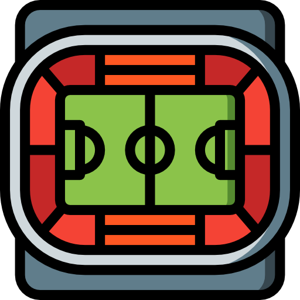
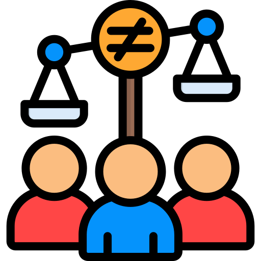
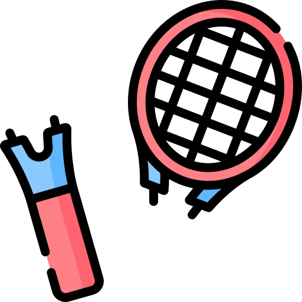
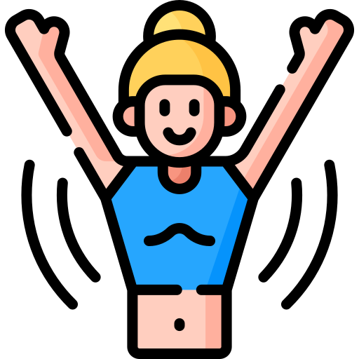
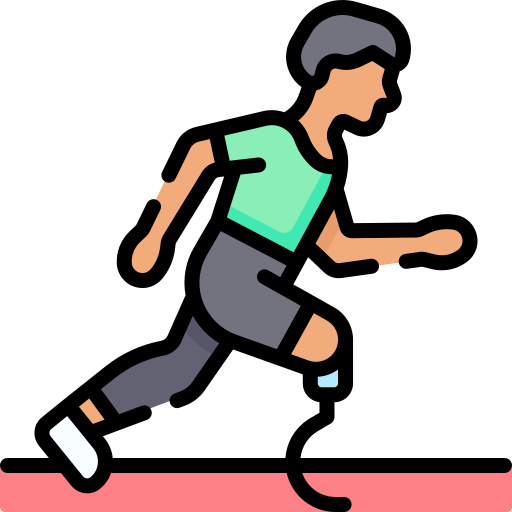
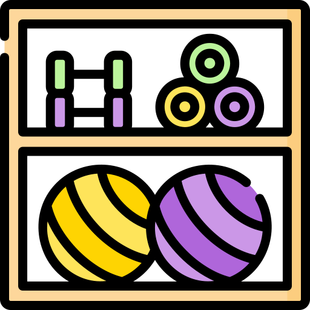

--:--

Many sports facilities are difficult to reach without a car. Only 28.8% are accessible by public transport, making everyday physical activity less accessible.

Income, gender and disability still influence who gets to play sports. Access remains deeply unequal, even though physical activity benefits everyone.

Most sports facilities were built decades ago and many are difficult to repair. More than 60% date from before 1995, encouraging costly renovations instead of simple maintenance.

Outdoor gyms, shared fields and open club facilities make exercise part of daily life. Sport should be a five-minute walk away, not a car journey.

Equipment loans, financial support and accessible facilities can remove many barriers. No one should be excluded because of income, gender or disability.

Sports equipment should be designed with replaceable parts and durable materials. Repair should be easier than replacement, reducing waste and extending the life of public facilities.